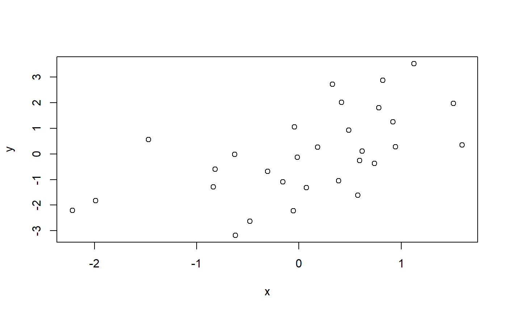

boot_ci_mean.RdFunction calculates bootstrapped mean (or other function)
and its confidence interval for a vector x.
boot_ci_mean(x, conf = 0.95, R = 1000, sim = "balanced", type = c("norm")) boot_ci_fun(x, FUN, conf = 0.95, R = 1000, sim = "balanced", type = c("norm"), label = as.character(match.call()$FUN)) boot_ci_corr(x, y = NULL, method = c("spearman", "kendall", "pearson")[1], use = "everything", conf = 0.95, R = 1000, sim = "balanced", type = c("norm"), label = "corr_coef")
| x | a vector. |
|---|---|
| conf | A scalar or vector containing the confidence level(s) of the required interval(s). |
| R | The number of bootstrap replicates. Usually this will be a single
positive integer. For importance resampling, some resamples may use
one set of weights and others use a different set of weights. In
this case |
| sim | A character string indicating the type of simulation required.
Possible values are |
| type | A vector of character strings representing the type of intervals
required. The value should be any subset of the values
|
| FUN | a function, that takes a vector returns one number, e.g. mean, median, etc. |
| label | (string) a label for function to be used as column name. |
| y | a vector. |
| method | a character string indicating which correlation
coefficient (or covariance) is to be computed. One of
|
| use | an optional character string giving a
method for computing covariances in the presence
of missing values. This must be (an abbreviation of) one of the strings
|
A data frame with bootstrapped mean and its confidence interval.
boot_ci_correlation calculates confidence interval for correlation
coefficient between vectors x and y.
set.seed(1) x <- rnorm(1000, mean = .5, sd = .1) # ~~~~~~~~~~~~~~~~~~~~~~~~~~~~~~~~~~~~~~~~~~ set.seed(1) boot_ci_mean(x)#> ci_lower mean ci_upper #> 1 0.4924471 0.4988352 0.5052233# ci_lower mean ci_upper # 1 0.4923028 0.4988352 0.5053676 # ~~~~~~~~~~~~~~~~~~~~~~~~~~~~~~~~~~~~~~~~~~ set.seed(1) boot_ci_fun(x, IQR)#> ci_lower IQR ci_upper #> 1 0.1307229 0.1385801 0.1486593# ci_lower IQR ci_upper # 1 0.1307229 0.1385801 0.1486593 # ~~~~~~~~~~~~~~~~~~~~~~~~~~~~~~~~~~~~~~~~~~ set.seed(1) MeDiAn <- median boot_ci_fun(x, MeDiAn, name = "m")#> Error in boot_ci_fun(x, MeDiAn, name = "m"): unused argument (name = "m")# ci_lower median ci_upper # 1 0.4900485 0.4964676 0.502184 set.seed(1) x <- rnorm(30) y <- x - rnorm(30) + runif(30,-2,2) plot(x,y)set.seed(1) boot_ci_correlation(x,y)#> Error in boot_ci_correlation(x, y): could not find function "boot_ci_correlation"# ci_lower corr_coef ci_upper # 0.4263133 0.6258065 0.8571043 # ~~~~~~~~~~~~~~~~~~~~~~~~~~~~~~~~~~~~ df <- data.frame(x,y) set.seed(1) boot_ci_correlation(df)#> Error in boot_ci_correlation(df): could not find function "boot_ci_correlation"